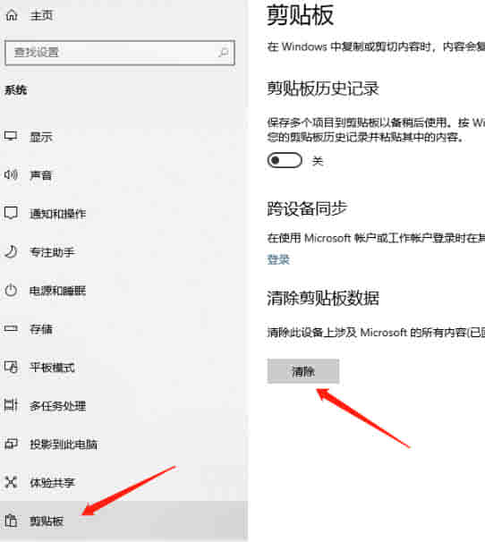

openclipboard 失败
插入零部件提示
方法 1：
该提示大概率与电脑的剪贴板有关，重新电脑是直接有效的验证和解决方法。 建议在下次重启电脑时，操作装配体【插入零部件】验证是否还存在此情况
方法 2：
在一种情况下，”FSL Launcher 快捷管理器应用程序”导致了这个问题。如果您有此应用程序，或类似的应用程序，我们建议您卸载该应用程序，以验证它是否是原因。
根据网上说法还存在其他相似软件，具体到用户问题电脑，建议是暂时所有能退的程序（或卸载）进行验证。
方法 3：
1.开始菜单打开设置页面
2.进入系统设置
3.选择剪切板，若清除按钮未置灰，则说明剪切板中有内容，点击清除则清除剪切板内容成功。
方法 4：
原因：此消息通常可能表示机器上缺乏资源。请检查下面情况：
1、确保%temp%文件夹中有足够的空闲空间。
2、确保%temp%文件夹具有适当的权限。
3、确保系统驱动器有足够的剩余磁盘空间。
4、确认后，重复问题操作验证
其补充说明：
OpenClipboard (作为 winuser.h 的功能)用于打开剪贴板进行检查，并阻止其他应用程序修改剪贴板内容。理论讲一般对 SW 插入零部件情况无大影响，在出现体现后关闭弹窗即可。（当然具体情况具体分析）